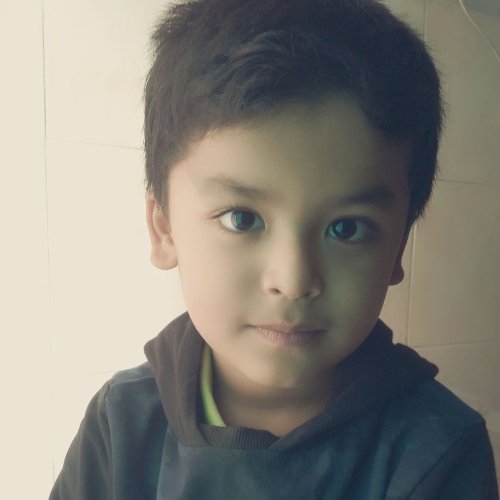
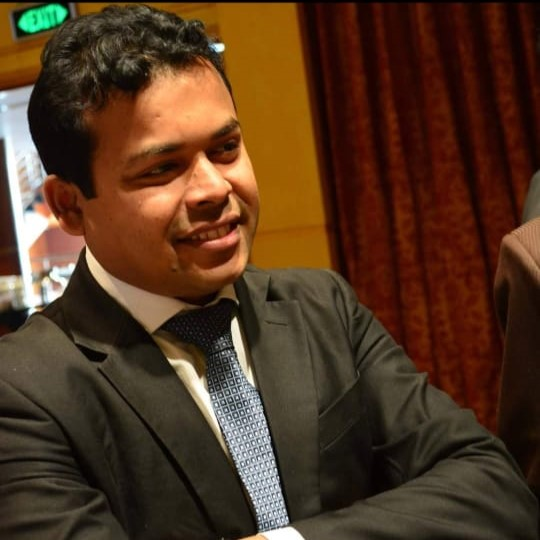
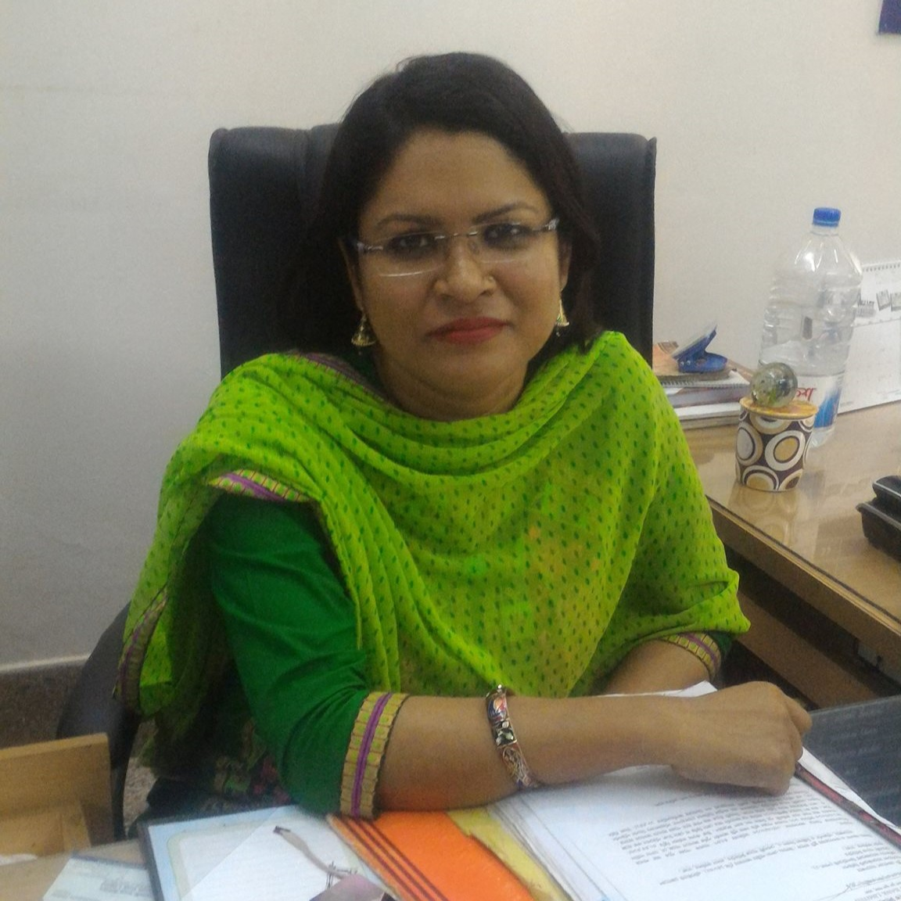
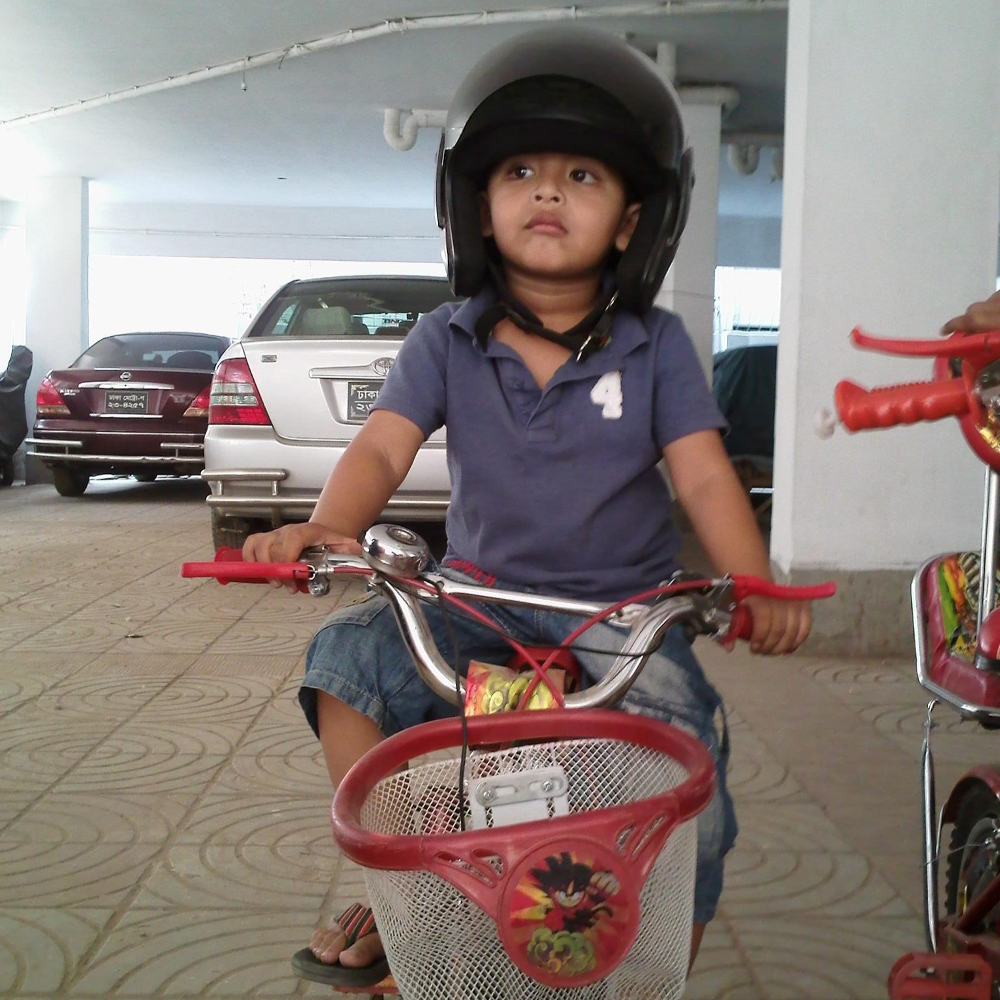
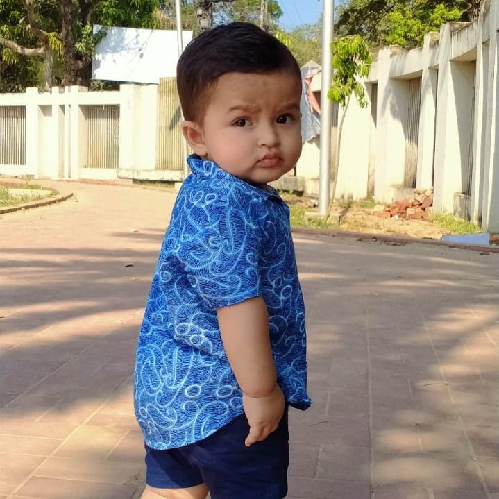

Yamin Rahman
Hello, I'm Yamin Rahman. I am a 12 year old student studying in Manarat Dhaka International School and Collage. I live in Dhaka Bangladesh with my parents. More specifically I live in Aftabnogor which is a city in Dhaka. I am a bright student of my school and do well in the academic and sports activities. I am capable to do well under any stressful condition. I am very skilled and knowledgeable student in my school. I do very hard study for long hours around the clock at home. Currently I am in grade 5. My hobby is to make websites and code.
Contact Me
Kayes Bin Habib (My Father)
My father is the closest person to me. My father is a cheerful and jovial person. He likes to make the people around him happy. So he has a number of good friends, and they all love and respect him. My father is a generous and kind person. he is an Engineer and is a very hardworking person.
He is an intelligent person who answers all my questions. He helps me and my brother in our studies every day. He teaches us good manners, humanity and morals of life. My father is my role model and I want to become like him one day.
Contact Me

Mosfiquen Nahar(My mother)
My mother is an ordinary woman she is my superhero. In every step of my, she supported and encouraged me. Whether day or night she was always there for me no matter what the condition is. Furthermore, her every work, persistence, devotion, dedication, conduct is an inspiration for me. she is a banker, more specifically a banker at Sonali Bank. She is the best cook I know. She makes delicious food for me. SHe usually takes me and my brother to markets. She is not the biggest tech guy.
Contact Me

Yasa Rahman(My brother)
I have a brother, who is 15 years old and currently is studying in class 9. He does not too good in his class but he does a lot of studying outside school. He is a very big tech guy. I got my inspiration from my brother. He doesn't play a lot of sports but tries to attend in it. Although he fights with me on silly things, he cares for me a lot. My brother often shares his computer and chocolates with me and we have fun playing together. My brother is kind of fat. But he wants to start working out.

Tasfin Zaraf(My Cousin)
Tasfin is probably my favorite cousin. He is just about 2 years old. He is now learning to speak. Me and my brother named him Tasfin. His eyes are bright, his smile shining, and his personality exuding confidence like no other; freckles don't pale his skin, and his proud yet humble stance gives him a look of kindness. He is, to put it simply outgoing. Anyone who has come across my cousin Tasfin could easily tell you that.

Showrab Bin Habib(My uncle)
He is a student who recently finished his bachelors. He is now studying to go abroad.My uncle has a huge impact on the way I become a person today. He has influenced my life by teaching me the lessons and showing me the right behaviors from wrong. No matter what I do and when I need advice on what to do, I can always count on my uncle. He has exerted real influence on me to change me. When I think of him he shines confidence.
Contact Me